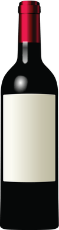

Cabernet Franc

Viña Gualtallary, Tupungato. Altitud 4822 pies (1470 m) de elevación.Tipo de Suelo rocoso calcáreo profundo
Malbec
Viña Gualtallary, Tupungato. Altitud 4822 pies (1470 m) de elevación.Tipo de Suelo rocoso calcáreo profundo
Syrah
Viña Gualtallary, Tupungato. Altitud Syrah: 4822 pies (1470 m) de elevación. Viognier: Altitud: 4593 pies (1400 m) elevación.
Chardonnay
Viña Gualtallary, Tupungato. Viñedo de alta densidad (10.000 plantas por hectárea). Altitud 4822 pies (1470 m) de elevación. Tipo de Suelo rocoso.
Bonarda
Viña El Barranco, Junín. Altitud 2132 pies (650 m) de elevación. Tipo de Suelo Arena y piedras de río.